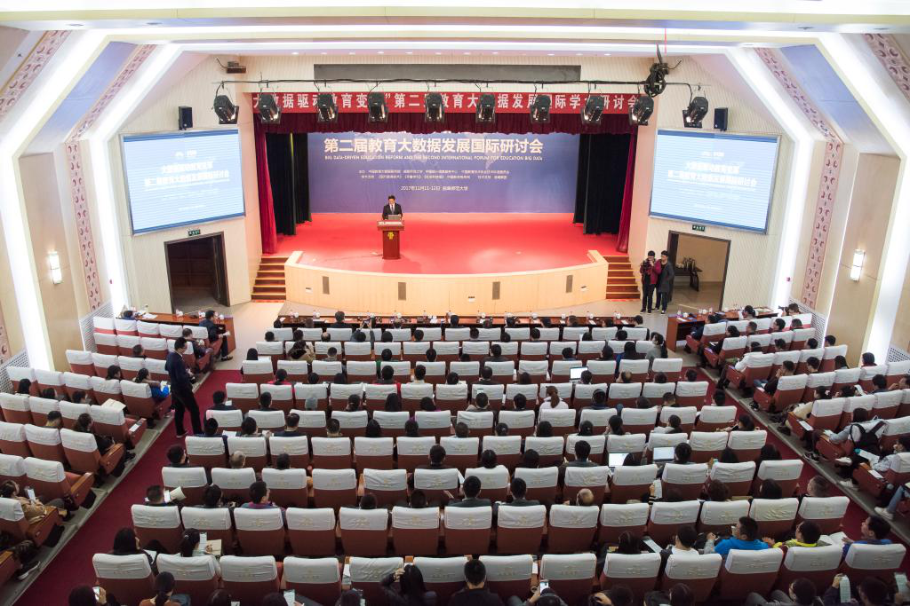
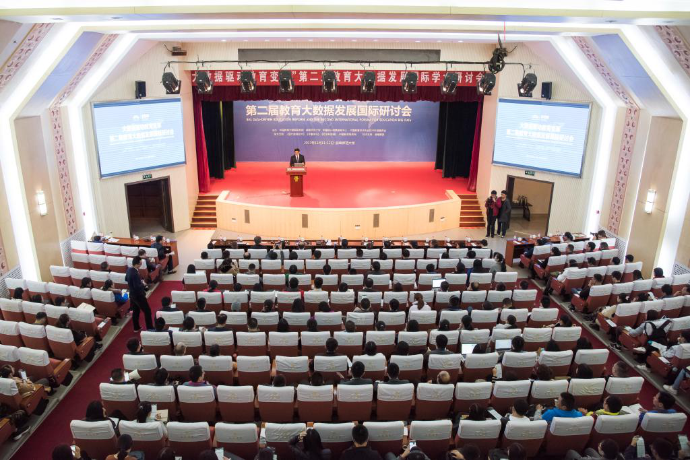

曲阜师范大学副校长、社科联主席夏云杰教授在开幕式上致辞

中国统计信息服务中心主任严建辉在开幕式上致辞
中国教育技术协会副会长、清华大学《现代教育技术》主编钟晓流教授在开幕式上致辞
 

守望教育初心，前瞻教育变革，论道教育大势。11月11日至12日，“大数据驱动教育变革”第二届教育大数据发展国际研讨会在孔子故里——曲阜隆重召开。
本次会议由曲阜师范大学、中国统计信息服务中心、中国教育技术协会联合主办，中国教育大数据研究院、曲阜师范大学社会科学处、曲阜师范大学科技处举办，《现代教育技术》杂志社、《齐鲁学刊》、《社会科学报》、中国教育智库网、浪潮集团协办。
中国统计信息服务中心主任严建辉，教育部科技发展中心主任李志民，我校副校长、社科联主席夏云杰教授，中国教育技术协会副会长、清华大学《现代教育技术》主编钟晓流教授，国务院参事、发展中国家科学院院士石勇教授，教育部在线教育研究中心副主任、清华大学副秘书长聂风华教授，国际教育数据挖掘协会主席Mykola Pechenizkiy教授等出席会议。来自新西兰奥克兰大学、马来西亚理工大学、澳大利亚科廷大学、北京大学、清华大学、中国科学院、台湾交通大学、台湾东华大学等近40家高校、科研机构和企业的国内外知名专家学者参加会议。
会议共分三个阶段，分别由我校社会科学处负责人杜曙光、我校科技处处长禹继国和中国教育大数据研究院张英魁教授主持。
夏云杰在开幕式上致辞，代表学校向出席会议的领导和来宾表示诚挚欢迎。他表示，在互联网、大数据、人工智能等信息技术飞速发展的新形势下，教育如何顺应变革，融合人文传统与科技创新，并在变革中守护成其为教育的本来之规律、应有之价值，是每一位教育工作者面临的重要课题。本次研讨会旨在以“教育大数据”为载体，以“大数据驱动教育变革”为主题，凝聚起新时代教育改革创新的广泛共识和力量，搭建起学界同仁深入研讨和交流的窗口，共同致力于推动落实学术研究支撑、产学研互动、国际合作创新为体系的“教育大数据发展路线图”。夏云杰说，作为孔子家乡的大学，曲阜师范大学因孔子而生、顺时代而行，努力建设既具有独特文化气质、突出文化优势，又具有变革精神、创新品格的高水平大学。学校目前已经形成了人文社会科学的研究优势，形成了教育大数据等交叉学科研究、前沿创新研究的特色。他对各合作单位和兄弟高校的鼎力支持表示衷心感谢，希望各位专家和同仁一如既往地对曲阜师范大学的发展给予支持，携手并进、加强交流、深化合作，共同为建设新时代教育强国贡献教育力量和大数据智慧。
严建辉在开幕式上致辞，代表共建主办单位对各位专家、各位朋友表示热烈欢迎，对具体组织筹备本次会议的曲阜师范大学师生表示诚挚感谢。他表示，我国当前教育面临的主要矛盾已经不仅仅是解决接受教育的问题，而是要满足人民群众对教育更高层次的需要，包括教育公平、教育高质量、个性化发展等。教育面对的是一个个对未知世界充满好奇的学生，解决的是每一个学生的个人成长问题，只有尊重个体差异，发挥每个孩子的特长，才是有质量的公平教育。他指出，从多方面、多维度来跟踪和研究每一位学生的学习行为数据，衡量教学效果、挖掘个人潜能，是大数据和人工智能等新技术发展将要发挥价值的所在。针对教育过程本身的大数据研究和场景应用将是中心大数据实验室、教育大数据研究院下一步的工作重点。他希望愿意参与教育大数据研究应用的教育机构、教育工作者以及各界朋友，与中国统计信息服务中心、中国教育大数据研究院共同携手，为中国教育的发展贡献力量。
钟晓流在开幕式致辞中对本次研讨会的召开表示衷心祝贺。他表示，中国教育的现代化需要信息化来支撑，教育现代化和信息化必然要求在技术上实现质量化控制、质量化管理、质量化评估等，这些都需要大数据的分析和处理来提供支撑。他希望与会专家和同仁通过本次论坛在大数据方面碰撞思想火花，为教育信息化贡献智慧和力量。
为期两天共17场主题报告，使本次研讨会成为教育大数据的学术盛会和思想盛宴。研讨会上，李志民作了题为《信息技术发展与教育变革》的报告，石勇作了题为《大数据分析及其应用》的报告，聂风华作了题为《雨课堂：数据为教学赋能》的报告， Mykola Pechenizkiy作了题为《Responsible Learning Analytics》的报告。此外，新西兰奥克兰大学博士生导师Jason Stephens，马来西亚理工大学教育学院博士生导师Norafandy Yahaya，澳大利亚科廷大学博士生导师刘万泉，台湾交通大学教育研究所所长、博士生导师林珊如，台湾东华大学教育学院院长、博士生导师范熾文，北京大学国际教育信息化研究中心主任贾积有，教育部基础教育质量监测中心常务副主任辛涛，教育部教育发展研究中心研究员熊建辉，中国教育技术协会副会长、清华大学《现代教育技术》主编钟晓流，民族教育信息化教育部重点实验室常务副主任甘健侯，首都师范大学数字化学习实验室主任、人民教育出版社数字教育研究院首席研究员方海光，江苏省教育大数据科学与技术重点实验室主任余文华等，先后作了主题报告。与会专家学者围绕大数据与教育治理、教育质量评价、教学模式改进、教师专业发展、学生学习成长等热点，就大数据助力实现更高质量、更加公平、人民满意的教育进行了广泛交流和深入研讨。
研讨会上，中国教育大数据研究院副院长、中国统计信息服务中心大数据研究实验室主任江青发布了2017年教育大数据研究成果：《2016-2017学年教育热点研究》和《2016-2017年度中国普通高等院校声誉指数研究报告》。
《2016-2017学年教育热点研究》采集了2016年9月-2017年8月期间新闻声量在100t以上的教育类新闻，通过收集挖掘碎片化信息的大数据技术手段及研究方法，以教育部关注热度、媒体关注热度、专家机构关注热度以及民众关注热度为切入点，对2016-2017学年内的中国教育新闻的热度进行了综合评价。
《2016-2017年度中国普通高等院校声誉指数研究报告》通过构建声誉指数评价体系，对本科院校和专科院校的声誉分别进行评价研究，对不同类型的本科院校和不同省份的专科院校分别进行声誉评价研究，主要包括“中国普通高等院校（本科）声誉指数TOP20”“中国普通高等院校（专科）声誉指数TOP20”“按办学类型的中国普通高等院校（本科）声誉指数”“按省份的中国普通高等院校（专科）声誉指数”；旨在通过对中国普通高等院校声誉的对比，为公众提供直观的中国普通高等院校声誉分布情况，同时也为管理者了解中国普通高等院校声誉，改善中国普通高等院校声誉提供参考。
（作者：李文振 刘萌 来源：宣传部 编辑：宣传部新闻中心 责编：李文振）